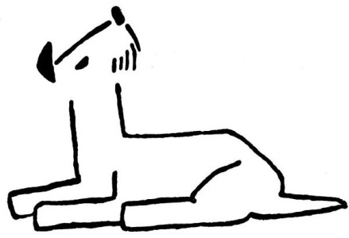

Pravda, někteří jiní psi mají také useknuté ocásky, například dobrmani – však víš, jak vypadá dobrman, ne? Je to takový černý nebo hnědý halama, samé nohy, a ocásek má ufiknutý u samého zadečku. Ale to není na památku po Foxlíkovi, kdepak! Seď tiše, a já ti povím, proč se dobrmanům utínají ocásky.
Byl jednou jeden dobrman a měl takové hloupé jméno, Astor nebo Felix, tak nějak. A ten Astor nebo Felix byl tak hloupý, že si neuměl jinak hrát, než že si honil dokolečka svou vlastní oháňku. „Počkej chvilku,“ vrčel na ni, „já si do tebe jen tak drobátko kousnu.“ „Nepočkám,“ řekl ocásek. „Počkej, nebo se budu zlobit,“ zaštěkal dobrman. „Nepočkám,“ smál se jeho ocásek.
„Když nepočkáš,“ hrozil dobrman, „tak tě sežeru!“
„A že nesežereš!“ vsázel se ocásek.
Tu se ten dobrman dopálil, skočil po svém ocásku, chňapl po něm a sežral jej; a byl by možná sežral sebe celého, kdyby nepřiběhli lidi a nerozehnali ho koštětem.
Od té doby lidé usekávají dobrmanům ocásky u samého zadečku, aby si je ti dobrmani nemohli sežrat.
Hotovo. To nám to dnes rychle šlo, co?
